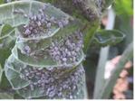
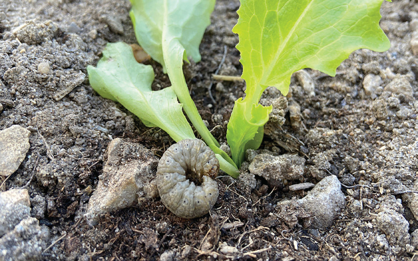
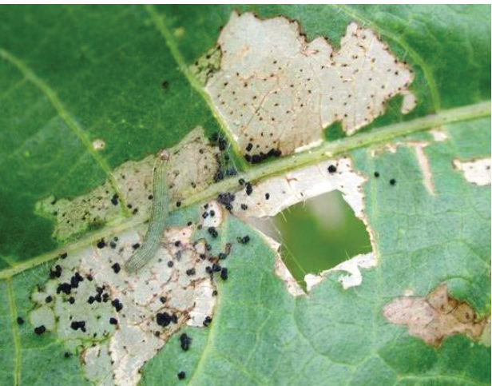

Aphids
What they do: Suck plant sap.
How to know them: Look for small soft-bodied insects on leaves and stalks (refer to Figure 6.6).
How to manage them: Encourage natural enemies and use recommended insecticides.

Cutworms
What they do: Feed on plant stem near the base.
How to know them: Check for plant stems that have been cut off near the base (refer to Figure 6.7).
How to manage them: Use bio-based pesticides

Beet armyworms
What they do: Feed on plant leaves.
How to know them: Look for white hairs on beet armyworm eggs and larvae on plant leaves (refer to Figure 6.8).
How to manage them: Use recommended pesticides.
